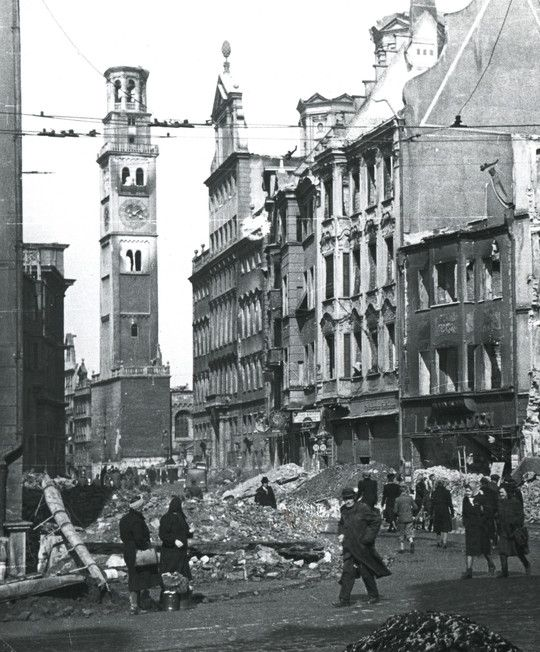
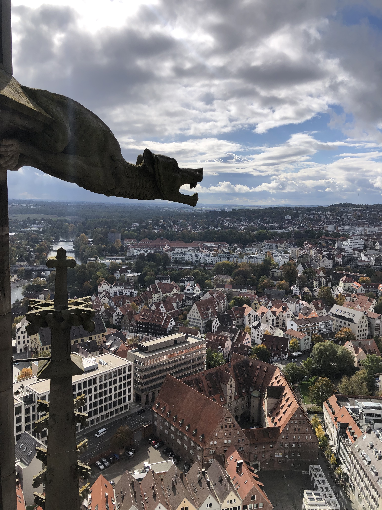

Noviembre 2020
UN PASEO OTOÑAL EN AUGSBURG

Este es mi cuarto otoño en Alemania y es uno de esos días perfectos donde el calor del sol aún puede atravesar el frío y dejar que tu cuerpo se caliente.
Alemania me ha enseñado que estos días son un regalo y no hay que desperdiciarlos.
Terminamos de desayunar y le digo a Flo que debemos salir a dar un paseo, hábito que aprendí aquí en Alemania donde “paseo” significa salir a caminar al aire libre sin ningún plan en específico, sin ninguna ruta demarcada.
Solamente salir y dejar que los pies te guíen.
Caminamos durante 20 minutos y nos detenemos en la plaza del ayuntamiento donde veo que está desocupado solo uno de los 14 bancos que bordean la plaza redonda.
Nos sentamos al frente del árbol de Navidad –un pino natural tan grande como un edificio de 6 pisos.
–El árbol se ve como triste –le comento a Flo
–¿Te parece? Yo pienso todo lo contrario. Se ve lindo lleno de estrellas doradas—responde mientras contempla el tope del pino.
–Quizás me da esa impresión porque no está rodeado de todas las casitas marrones entonces se ve ahí como abandonado en el medio de la plaza—reflexiono pensando en el mercado de navidad.
Cada ciudad, pueblo o aldea en Alemania tiene un mercado de navideño cuya tradición se remonta al año siglo XIV.
Miro a mi derecha y veo que entra lentamente la policía en su patrulla gris con azul.
Todavía no me acostumbro a verlos rondar en la calle.
Aquí a diferencia de en Venezuela, ver a la policía en la calle es la excepción y no la regla.
Se detienen frente al banquito de la derecha donde se sientan dos hombres de unos 30 años.
—En esta zona tienen que usar el tapabocas— les indica el policía luego de bajar el vidrio.
- Pero estoy tomando un café. ¿También tengo que usarlo si estoy tomando algo?
-Sí, esas son las reglas
Los hombres se ajustan el tapabocas y el policía continua lentamente su recorrido bordeando el resto de la plaza.
Es noviembre del 2020.
La segunda ola de coronavirus hace que respiremos el aire fresco otoñal a través de una tela y el árbol separado de sus compañeros es el recordatorio constante de que estas navidades no serán como cada año.
Este es mi cuarto otoño en Alemania y es uno de esos días perfectos donde el calor del sol aún puede atravesar el frío y dejar que tu cuerpo se caliente. Alemania me ha enseñado que estos días son un regalo y no hay que desperdiciarlos. Terminamos de desayunar y le digo a Flo que debemos salir a dar un paseo, hábito que aprendí aquí en Alemania donde “paseo” significa salir a caminar al aire libre sin ningún plan en específico, sin ninguna ruta demarcada. Solamente salir y dejar que los pies te guíen.
Caminamos durante 20 minutos y nos detenemos en la plaza del ayuntamiento donde veo que está desocupado solo uno de los 14 bancos que bordean la plaza redonda.
Nos sentamos al frente del árbol de Navidad –un pino natural tan grande como un edificio de 6 pisos.
–El árbol se ve como triste –le comento a Flo
–¿Te parece? Yo pienso todo lo contrario. Se ve lindo lleno de estrellas doradas—responde mientras contempla el tope del pino.
–Quizás me da esa impresión porque no está rodeado de todas las casitas marrones entonces se ve ahí como abandonado en el medio de la plaza—reflexiono pensando en el mercado de navidad.
Cada ciudad, pueblo o aldea en Alemania tiene un mercado de navideño cuya tradición se remonta al año siglo XIV.
Miro a mi derecha y veo que entra lentamente la policía en su patrulla gris con azul.
Todavía no me acostumbro a verlos rondar en la calle.
Aquí a diferencia de en Venezuela, ver a la policía en la calle es la excepción y no la regla.
Se detienen frente al banquito de la derecha donde se sientan dos hombres de unos 30 años.
—En esta zona tienen que usar el tapabocas— les indica el policía luego de bajar el vidrio.
- Pero estoy tomando un café. ¿También tengo que usarlo si estoy tomando algo?
-Sí, esas son las reglas
Los hombres se ajustan el tapabocas y el policía continua lentamente su recorrido bordeando el resto de la plaza.
Es noviembre del 2020. La segunda ola de coronavirus hace que respiremos el aire fresco otoñal a través de una tela y el árbol separado de sus compañeros es el recordatorio constante de que estas navidades no serán como cada año.
Octubre 2020
DER KRIEG
Los adultos siempre hablaban de él, pero ella nunca le vio la cara sino solamente su silueta. Ella lo describe como alguien muy alto y feo que siempre calzaba unos zancos de madera grandes para poder espiar por las ventanas. Él era alguien malvado capaz de escuchar y ver todo. Así es como Hannelore se imaginó a der Krieg —la guerra, que en alemán lleva nombre de hombre — cuando apenas tenía 5 años.
Hannelore vive en un apartamento rodeada de casi 80 plantas, una colección de fotos de familia y afiches de Van Gogh. Sentada en un sofá de tela color crema con patrón de flores azules, repasa brevemente la historia de su vida que empezó en 1934 en Augsburgo, Alemania. Su nombre real es Johanna Eleonore porque así lo dictó un cura al considerar que Hannelore no era católico. Ella dice que es una persona muy curiosa y así lo confirma su nieta Monika al contar que su abuela siempre quiere saber sobre la vida sus nietos. Monika recalca que lo que caracteriza su curiosidad no es el chisme sino el deseo sincero de saber qué pasa en la vida de sus nietos, de escucharlos sin prejuicios, de aconsejarlos y mantener a salvo sus secretos. Para su nieta, Hannelore —quien solía liderar en la iglesia un círculo seguro para que mujeres compartieran sus penas— es su mejor amiga.
A pesar de que ella vivió uno de los periodos más terribles de la historia europea, no lo recuerda como un episodio oscuro de su vida. Confiesa que quizás es por haberlo visto con una perspectiva inocente al pensar que llegar al colegio y gritar cada mañana “¡Heil Hitler!” era normal porque en sus ojos de niña “Hitler era un hombre normal”. Quizás es por haber borrado de su memoria los detalles del bombardeo de Augsburgo en 1942 —cuyo objetivo en era una fábrica de motores de diésel de submarinos, pero en realidad fue la ciudad entera— donde “sentados en el sótano pensaba que nos íbamos a morir”. Quizás es por haber tenido una madre fuerte e independiente que le enseñó a no lamentarse —como muchos de otros ciudadanos que también lo perdieron todo—por vivir como refugiados en una granja en el pueblo de Pfaffenhofen. Una madre que le recalcó lo importante de no mirar atrás, de adaptarse en ese nuevo hogar temporal y trabajar en cualquier cosa que le fuera de utilidad a sus anfitriones como por ejemplo cuidando el ganado, recolectando las cosechas en el campo, o madera en el bosque.
Escuchar sobre su vida es oír retazos de su familia. De su abuela que tuvo 18 hijos. De su madre viuda que intercambiaba la ración de cigarrillos por cualquier otra cosa que necesitaran. De su familia que desde USA les mandaban cajas de ayuda después de la guerra. De su tío que conoció a su esposa al detener su tanqueta para pedirle una cita a esa chica que caminaba por la calle. Y de su esposo al que conoció en su primer trabajo y al que ella — contrario a las normas de la época— le pidió matrimonio en una carta enviada desde Londres.
Johanna Eleonore—quien es una mujer que resalta la importancia de la igualdad de género y la diversidad— confiesa que 81 años después, todavía ve la silueta de der Krieg de vez en cuando.
Octubre 2020
LA IGLESIA MÁS ALTA DEL MUNDO
La iglesia más alta del mundo queda a tan solo 42 minutos de Augsburgo —la ciudad alemana donde vivo desde hace casi dos años— y yo no lo sabía. No es que no haya visto esa edificación gris de 163 metros de altura en uno de los viajes en tren de camino a Berlín porque es algo así como ir a Caracas y no ver el Ávila: imposible de ignorar. Simplemente nunca se me ocurrió preguntarle a San Google algo tan sencillo como el nombre de esa iglesia que parece una catedral.
La Iglesia mayor de Ulm es protestante y queda a unos 520 Km de Berlín. Así lo indica el circulo dorado en el piso que marca la distancia entre Ulm y otras 20 ciudades. Hoy logro ver la iglesia de cerca y en pausa. Mi cerebro la registra como si estuviera divida en tres partes. El pedazo de la izquierda y la derecha son simétricos, de ladrillos y su forma se asemeja a las casas que pintan los niños cuando aprenden a dibujar. La diferencia es que en este “dibujo” se alza una torre gigante que crece tan abruptamente como adolescente en vacaciones escolares cuando se estira “como una vara de puya loca”, como diría mi mamá. Quiero quedarme más tiempo parada frente a esta iglesia cuya construcción comenzó en 1377 y terminó en 1890. Quiero observar con más detalle su estilo gótico y su torre de piedras grises que adquieren tono cenizo por el paso del tiempo. La combinación de lluvia y frío otoñal me empujan adentro en busca de un refugio cálido.
Mi novio Flo y yo decidimos insertar en la máquina los cinco euros por persona que hay que pagar para subir a la torre. Me concentro en subir escalón por escalón, ignorando tanto mi tarea de estar atenta a todo mi alrededor, como el palpitar de mi corazón que golpea mi pecho implorando clemencia. Quinientos sesenta escalones con 12 minutos después llegamos al tope de la torre donde las reglas del Coronavirus dictan que solamente puedo caminar en una dirección para no chocar con otros turistas. Me detengo a medio camino y observo a lo lejos el barrio de los pescadores con sus casas blancas de techos triangulares de ladrillos rojos. Este desorden ordenado está delimitado por la biblioteca — una pirámide de vidrio azul que sobresale— y por el río Danubio.
En el descenso conseguí mi parte favorita de la torre: una habitación donde cuelgan a la derecha y a la izquierda marcos de madera blanca con 33 fotos en blanco y negro de templos religiosos que van desde la Sagrada Familia en España, hasta el Templo Dorado en India. En el medio hay un cilindro de piedra que se asemeja a esos “pozos de la buena suerte” donde la gente lanza una moneda y pide un deseo. Me acerco y veo que está cerrado, pero tiene cuatro aberturas rectangulares protegidas por un vidrio que dan vista a 10 de las 13 campanas. Cada una tiene un nombre y su peso oscila entre los 345 y 4192kg. Taufglocke —una de las campanas más pequeñas con 93cm de diámetro y 506kg de peso— comienza a mecerse esparciendo el sonido desde la torre hasta el resto de la ciudad y recordándome que pronto debemos iniciar el viaje de regreso a casa.
Agosto 2020
LA FAMILIA TELERÍN

Pocos turistas, como mi novio Flo y yo, han descendido en tiempos de pandemia por los más de 200 escalones que llevan a Playa Camilo en el sur de Portugal. La playa es como una cajita de fósforos con acceso directo al mar, rodeada de formaciones rocosas del tamaño de edificios de unos diez pisos y cuyos colores recuerdan a una torta en capas que va desde el ocre claro hasta el cenizo. Es una playa donde el mayor ruido proviene del agua rozando la arena.
La familia Telerín –compuesta por 5 adultos, 6 niños, 1 bote inflable, 3 salvavidas, 7 toallas, 4 sillas, 3 cavas, 2 parasoles y una pelota playera– arribó al mediodía irrumpiendo espacios y sonidos. Desde que comenzaron a bajar las escaleras, las miradas de todas las parejas que se encontraban en la playa se centraron en el “extraño” grupo. Con ceño fruncido parecía como si todos preguntaran al unísono: ¿de verdad se van a quedar aquí? La familia Telerín no se dio cuenta de lo que sucedía a su alrededor, estaban inmersos en ordenar su caos: oallas aquí, sillas allá, abre el parasol, saca la comida, lleva el bote a la orilla, persigue a los niños para la hora del protector solar. Revoloteaban tan rápido y toscamente que no cumplieron con la distancia social que forma parte de nuestra nueva normalidad.
La escena me retrocede alrededor del año 2000 cuando el pelotón de la familia Falcón se instalaba en el club CRPU en las costas venezolanas. “¿Será que la gente nos miraba así?”, me pregunto y no lo recuerdo.Solo pienso en el momento mágico en el que corría hacia el mar con mis primos.
¡Hola! Soy Marinell, soy un economista venezolana que vive en Alemania. ¡Soy una persona súper curiosa! Me encanta explorar nuevos lugares y restaurantes, conocer gente de todo el mundo y descubrir nuevas habilidades para aprender. Hablando de aprender, este año decidí que quería aprender algo nuevo y así es exactamente como llegué aquí: comencé a escribir historias cortas y quiero compartirlas con ustedes. ¿Saben cuál es la mejor parte? Que programé este sitio web yo sola gracias a la Escuela REDI y a mis increíbles profesores Catalina, Djalel y Stefan.